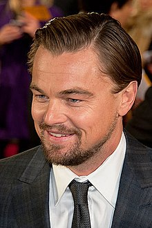

Леона́рдо Вільгельм Ді Ка́пріо (англ. Leonardo Wilhelm DiCaprio; нар. 11 листопада 1974, Лос-Анджелес,
США) —
американський актор, кінопродюсер. Лауреат премії «Оскар» за найкращу чоловічу роль у фільмі «Легенда Г'ю Гласса»
(2016), та нагороди BAFTA і Гільдії кіноакторів США за виконання ролі Г'ю Гласса. Лауреат трьох премій «Золотий
глобус» у категорії «Кращий актор в драматичній картині» і «Кращий актор — комедія або мюзикл» за головні ролі в
картинах «Авіатор», «Вовк з Уолл-стріт» і «Легенда Г'ю Гласса». Лауреат нагороди Берлінського кінофестивалю
«Срібний
ведмідь» в категорії «Кращий актор» за виконання ролі Ромео Монтеккі в картині «Ромео + Джульєтта».
Повноцінну акторську кар'єру почав в шістнадцять років на початку 1990-х років. У 2000-х роках отримав визнання публіки і критиків за роботу в широкому діапазоні кіно і акторську майстерність.
Народився 11 листопада 1974 року в Лос-Анджелесі, Каліфорнія. Леонардо — єдина дитина автора коміксів Джорджа Ді Капріо (н. 30 листопада 1943) і секретаря суду Ірмелін Інденбіркен (н. 1943). Батько має наполовину італійське <>(Неаполь), та німецьке (Баварія) коріння. Мати народилася в західнонімецькому Ор-Еркеншвіку в бомбосховищі в родині німця Вільгельма Інденбіркена й емігрантки з Одеси Гелени Інденбіркен (1915—2008, уроджена Олена Степанівна Смирнова), яка перед Жовтневим переворотом виїхала з батьками до Німеччини[7].